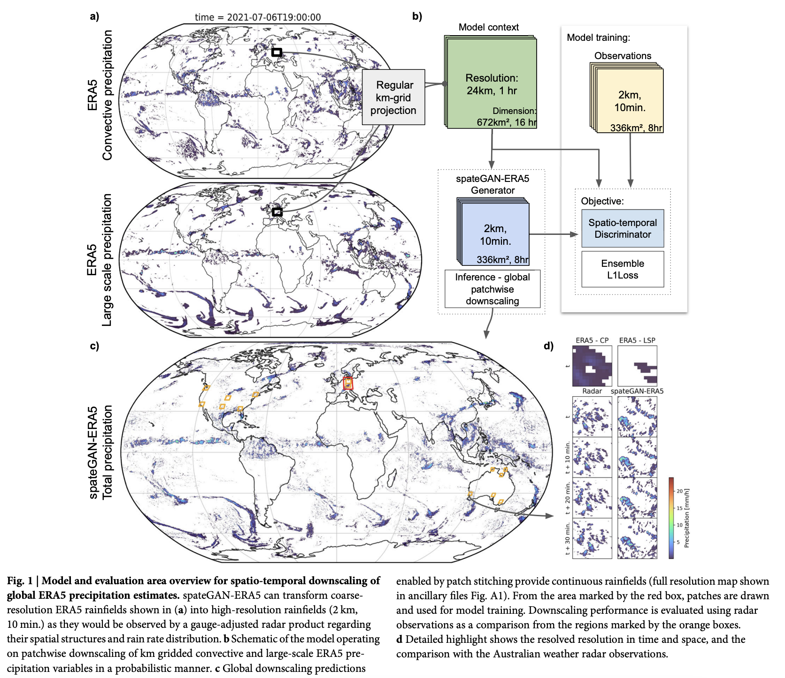
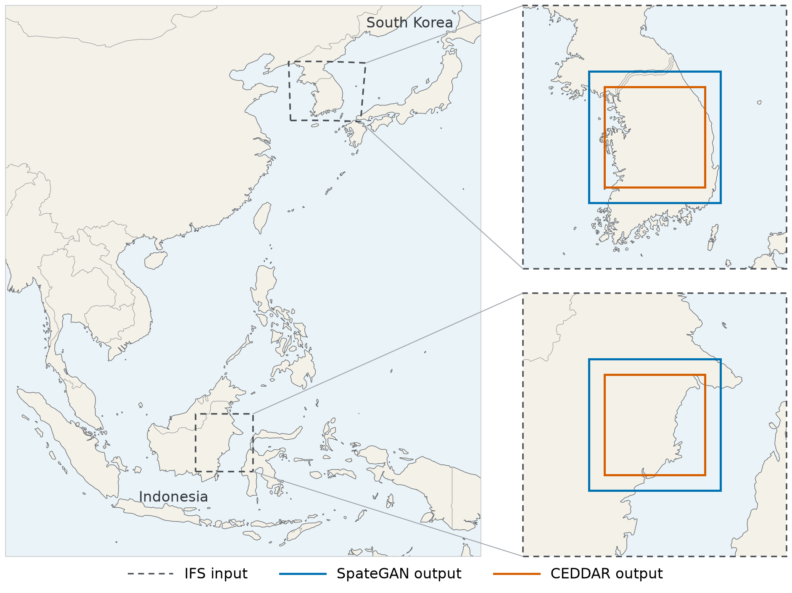
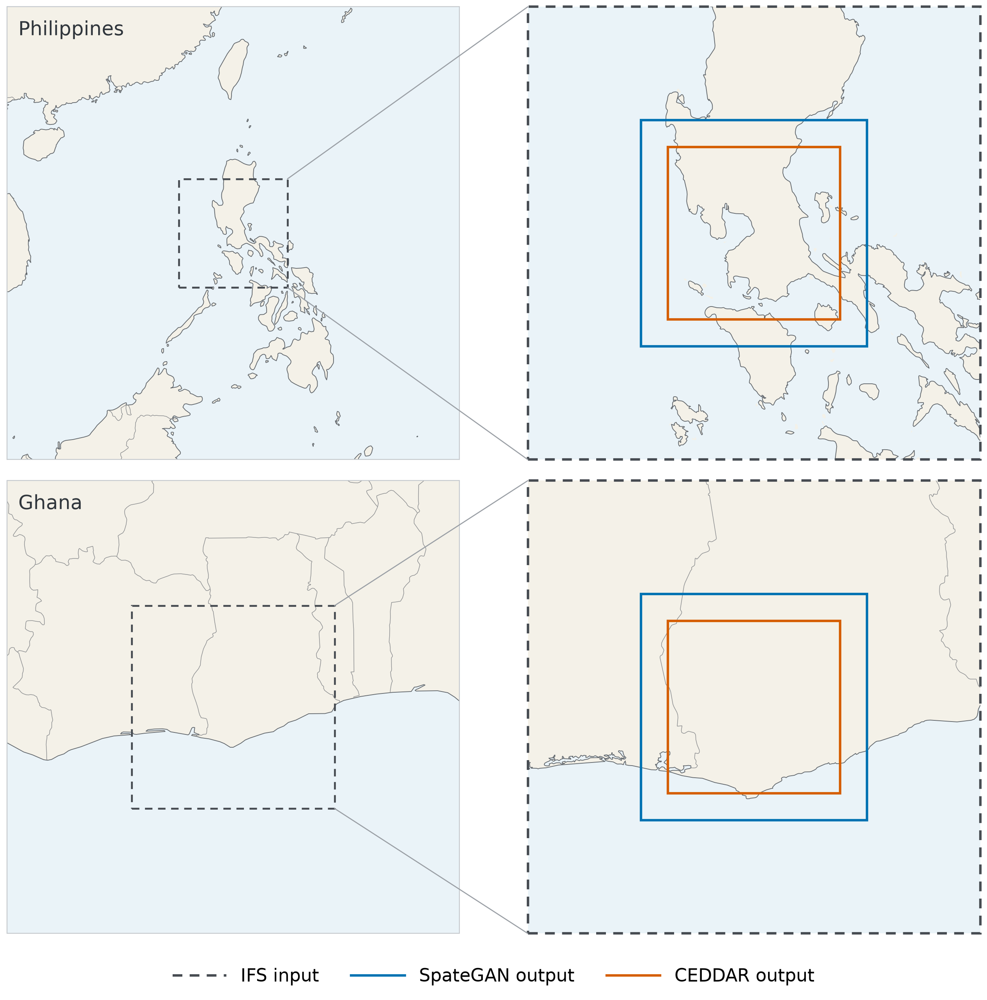

This project evaluates whether precipitation downscaling can provide finer spatial and temporal rainfall information for the Indonesian application. Two approaches, SpateGAN and CEDDAR, have been adapted to IFS forecasts and evaluated against Korean radar reference data.
Korean validation is complete for the reported configurations. Results show improvements in some error measures, alongside limitations in rainfall detection and spatial agreement. Regional inference examples demonstrate that the processing workflow runs over Indonesia, the Philippines, and Ghana; predictive accuracy in those regions has not yet been established.
SpateGAN is a generative adversarial network that increases the spatial and temporal resolution of rainfall fields. Its generator produces detailed rainfall sequences, while a discriminator helps it learn realistic rainfall patterns. The original ERA5 model was trained using German radar observations to downscale hourly, 24 km precipitation to 10-minute, 2 km fields. It can generate multiple rainfall realizations to represent uncertainty [1].
For IND, the pretrained model is adapted to IFS total precipitation and further trained using Korean PEAKHSP targets. SpateGAN-IFS is the pretrained generator adapted to one IFS total-precipitation channel, without Korean fine-tuning. SpateGAN-PEAK* is the retained PEAK step-500 checkpoint. Here, selected checkpoint denotes the recorded project selection, not the highest score in every metric or superiority to CEDDAR. SpateGAN-KMA denotes the step-1,000 comparator; SpateGAN-PEAK-5k denotes the step-5,000 confirmation run. CEDDAR-PEAK denotes the selected epoch-19 B0 checkpoint. These short names are used in plots and tables.
| Detail | Original model | IND adaptation |
|---|---|---|
| Input dataset / variables | ERA5 convective and large-scale precipitation | IFS total precipitation, one input channel |
| Target dataset | German gauge-adjusted radar rainfall (RADKLIM-YW) | PEAKHSP rainfall prepared from KMA radar data |
| Input spatial resolution | 24 km | 24 km |
| Input temporal resolution | 1 hour | 3 hours |
| Output spatial resolution | 2 km | 2 km |
| Output temporal resolution | 10 minutes | 30 minutes |
| Input dimensions | 2 variables x 16 time steps x 28 x 28 cells | 1 variable x 16 time steps x 28 x 28 cells |
| Output / target dimensions | 48 time steps x 168 x 168 cells, before inference boundary trimming | 1 variable x 48 time steps x 168 x 168 target cells |
| Training region / period | Germany; 2009 to 2020 | Korea; eligible training records from February 2024 to December 2025, excluding validation blocks and leakage exclusions |
| Initialization | Trained from scratch | Adapted from pretrained weights |
The adapted input covers 48 hours, and the output covers the central 24 hours. The comparison includes our trained SpateGAN-KMA, the retained SpateGAN-PEAK, and SpateGAN-PEAK-5k. KMA is the retained trained comparator; the current records do not establish it as the best of all KMA checkpoints. The PEAK 5k checkpoint was not selected to replace step 500.


CEDDAR is a diffusion-based model that generates high-resolution rainfall through repeated denoising, guided by coarse-resolution precipitation. Different samples produce an ensemble of possible rainfall fields. The original model downscales daily ERA5 precipitation at approximately 30 km to 2.5 km over Denmark, using the DANRA regional reanalysis as its reference [2].
For IND, CEDDAR has been adapted to paired IFS and PEAKHSP data. The B0 configuration was trained from scratch. The full 1,518-forecast rainfall evaluation is complete; results below are separate from training and validation loss.
| Detail | Original model | IND adaptation |
|---|---|---|
| Input dataset / variables | ERA5 precipitation | IFS precipitation |
| Target dataset | DANRA regional reanalysis precipitation | PEAKHSP rainfall prepared from KMA radar data |
| Input spatial resolution | Approximately 30 km | 24 km input information, resampled to a 2 km grid |
| Input temporal resolution | 1 day | 3 hours |
| Output spatial resolution | 2.5 km | 2 km |
| Output temporal resolution | 1 day | 3 hours |
| Input dimensions | 1 precipitation channel x 128 x 128 aligned cells in the released B0 configuration | 1 TP channel x 128 x 128 aligned cells; no seasonal or geographic conditioning |
| Output / target dimensions | 1 precipitation channel x 128 x 128 cells in B0 | 1 precipitation channel x 128 x 128 cells |
| Training region / period | Denmark; original training dates not verified in this review | Korea; eligible training records from February 2024 to December 2025, excluding validation blocks and leakage exclusions |
| Initialization | Original paper training initialization not verified in this review | Random initialization, seed 504; corrected B0 run |
CEDDAR generates individual three-hour rainfall fields rather than learning a continuous rainfall sequence. Consecutive outputs can be displayed together to show an event over time. The reporting checkpoint is corrected PEAK B0, epoch 19, using three ensemble members and 56 denoising steps.

The development dataset covers February 2024 to December 2025 over Korea.

IFS provides the forecast rainfall inputs, while PEAKHSP rainfall data prepared from KMA radar provide the high-resolution targets over Korea. The PEAK paper is currently under review. DI Cast 2 km is included as a supplementary satellite-product comparison. Performance in Indonesia remains to be assessed.
IFS and PEAKHSP data are paired by location and rainfall interval, then prepared in the model-specific formats described above. Rainfall amounts are stored in millimetres. Timestamps use UTC and mark the end of each rainfall interval. The current PEAK datasets retain complete targets without imputing missing values. Normalization statistics use training data only, and split leakage checks passed.
The models use different sample formats, so the sample counts are not directly comparable. An independent test set is still needed to assess performance after model development.
Both datasets draw from February 1, 2024 through December 31, 2025. Starts are inclusive and ends exclusive, all at 00:00 UTC. Training uses other eligible records after removing overlapping windows and cycles. SpateGAN additionally excludes shared IFS and target times; CEDDAR excludes other samples from cycles contributing validation targets.
The selected SpateGAN checkpoint reduces MAE and CRPS relative to its matched IFS baseline, but underestimates rainfall and has lower detection and spatial scores. CEDDAR improves CRPS while producing higher MAE and lower detection and spatial scores. These results support further evaluation, but do not establish a general accuracy improvement over IFS.
Forecasts and generated rainfall are compared against PEAKHSP radar observations. Every score on this page comes from this section. All six prepared cases are available from the tabs below.
All panels share one clock. IFS holds each three-hour field for six half-hour ticks so it stays aligned with the half-hour panels rather than drifting. Area is 336 km x 336 km.
Selected checkpoint* is the retained PEAK step 500, selected under the recorded project criteria. Its lower MAE does not mean it wins every metric: the matched IFS reference has higher CSI-M and Ensemble FSS. Nine of the 489 sequences share input times with historical KMA training, although none share forecast or target times; the strict no-input-overlap subset contains 480 sequences.
Longer training: step 5,000 has slightly lower MAE, but worse CRPS, rainfall detection and spatial agreement than step 500. Its total rainfall is about 58.8% below the target. Longer training did not produce an overall improvement; lower MAE alone would conceal the stronger underestimation.
CEDDAR provides eight three-hour fields per case, each held for six half-hour display frames so playback matches SpateGAN without implying finer temporal resolution. Area is 256 km x 256 km.
Compare each model with IFS within its own table. CEDDAR and SpateGAN use different samples and evaluation areas, so these two tables cannot establish a direct model ranking.
Thresholds are 0.1, 1, 3, 5 and 8 mm/hour, converted to three-hour amounts. Counts and sums are pooled over the evaluated samples before calculating scores; POD-M, FAR-M and CSI-M average the five defined threshold scores equally. Undefined scores stay blank and are excluded, not replaced with zero.
Ensemble FSS is the unweighted mean of 35 defined combinations, five thresholds by seven neighbourhood sizes of 1, 4, 8, 16, 32, 64 and 128 km, where the nominal 1 km label represents one 2 km grid cell. Only the mean is currently recorded. The threshold-by-scale breakdown remains to be completed.
Arrows indicate whether higher or lower values are better. M denotes the unweighted mean across the specified rainfall thresholds. MAE is already an average rainfall-amount error. Both tables use unadjusted rainfall and the saved ensemble-fraction FSS calculation, not legacy meFSS or the alternative ensemble-mean FSS.
| Metric | Meaning |
|---|---|
| MAE | Average absolute error in rainfall amount. |
| POD | Fraction of observed rainfall events detected. |
| FAR | Fraction of predicted rainfall events that were false alarms. |
| CSI | Rainfall-detection accuracy accounting for hits, misses, and false alarms. |
| Ensemble FSS | Agreement of ensemble rainfall-exceedance fractions with observed fractions across evaluation neighbourhood sizes. Higher is better. |
| CRPS | Error of the ensemble forecast distribution against the observed amount; lower is better. For deterministic IFS this equals MAE. |
MAE and detection use the ensemble mean; CRPS uses all three members. Three-member uncertainty results do not establish calibration.
Both runs allocated four CPU cores and 44 GiB of host memory. Times cover the full training runs, including validation and saved outputs; the selected checkpoints are step 500 and epoch 19. SpateGAN adapts the input layers of a pretrained model, while CEDDAR trains from scratch, so these costs cover different training scopes. Peak training GPU memory and training FLOPs were not measured.
Measured on one NVIDIA V100-SXM2 (32 GB), with three ensemble members and three timed repetitions across the 12 selected KR and IND cases after warm-up. Times are mean plus or minus standard deviation; input preparation, transfers, file writing and visualization are excluded. One SpateGAN sample produces 48 half-hour fields over 24 hours; one CEDDAR sample produces a three-hour field, so a 24-hour case requires eight predictions. Output areas also differ, so these are current-configuration costs rather than a matched architecture comparison.
The same 336 km x 336 km view and shared clock as the Korean cases, over the Indonesian application region. There is no radar reference column here because no radar target exists, so the row is input, model output and DI Cast only. Nothing in this row has been scored; it shows what the model produced.
Eight consecutive three-hour fields over the 256 km x 256 km CEDDAR area, each held for six half-hour display frames so playback matches the SpateGAN row above. Grey cells are missing DI Cast observations, not absent rainfall.
Both regions reuse an IFS input domain with the SpateGAN and CEDDAR output areas nested inside it, matching the Korean and Indonesian configuration, so the existing preprocessing carries across without change. Only the selected checkpoints are shown: SpateGAN-PEAK and CEDDAR-PEAK.

Three 24-hour cases, each named after the PAGASA radar site it is centred on. Radar is shown as a target column for visual comparison only; nothing here has been scored against it. Grey in the radar panel is outside that site’s coverage, not an absence of rain, so any comparison is limited to the area the radar actually sees.
Two 24-hour cases with no reference data available, so the rows show input and model output only. Nothing here can be checked against an observation.
SpateGAN’s continuation to 5,000 training steps did not show sufficient improvement to replace the earlier model version. Its total rainfall falls to 41% of the observed total, and its detection and spatial scores drop sharply, while MAE alone would have suggested a small gain.
CEDDAR completed 400 training epochs, with its lowest validation loss at epoch 19. Its full rainfall evaluation is complete: MAE and the detection and spatial scores are worse than its matched IFS reference, while CRPS is lower. Total generated rainfall is approximately 5.1% above the target.
SpateGAN-PEAK has lower three-hour MAE and CRPS than its matched IFS reference, but lower CSI-M and Ensemble FSS, and produces approximately 28.2% less rain than observed. Lower amount error therefore coexists with underestimation and weaker occurrence and spatial scores.
The current evidence demonstrates increased spatial and temporal resolution, but not consistently higher accuracy. Further evaluation should determine whether the additional detail improves a defined application, such as identifying local rainfall patterns or supporting downstream analysis.
Quantifying performance in Indonesia requires suitable reference observations. Radar and gauge coverage, data quality, access conditions, and acquisition costs should be assessed before selecting an evaluation dataset. The available Philippine radar cases offer an initial opportunity to assess transfer to a tropical region, subject to coverage and quality checks. They cannot establish Indonesian performance.
The reported training runs required 2.54 GPU-hours for SpateGAN and 10.49 GPU-hours for CEDDAR on one V100. These measurements establish the requirements of the current configurations. They do not estimate the resources needed for broader model development, larger ensembles, or operational delivery.
Infrastructure priority. Reliable GPU access and sufficient storage and data-transfer capacity would support repeated experiments, preprocessing, ensemble evaluation, and reproducible retention of inputs and results. Short individual training runs do not capture queue delays or the cumulative workload of comparing configurations. GPU concurrency, storage capacity, and throughput should be sized from the planned experiment schedule and measured data volumes; these requirements have not yet been quantified in this report.
Data priority. The current training archive covers February 2024 to December 2025. Extending the Korean reference archive would add seasonal and event diversity and support a separate test period. Obtaining suitable observations in the application regions is equally important: additional compute alone cannot establish regional accuracy without reference data.
The immediate priorities are to reserve an independent test period, complete the Ensemble FSS breakdown by threshold and spatial scale, and assess applicability to Indonesia.
Forecast input. IFS availability is a constraint for the Indonesian application, so GFS is being considered as a substitute or supplement, with other forecast sources explored alongside it. GFS is downloaded at three-hour intervals, so the download cadence alone does not require changing the models’ temporal structure. Before reuse, verify the precipitation accumulation windows and units, spatial grid and preprocessing, and evaluate whether fine-tuning is needed for the change in forecast source. GFS-based performance remains to be assessed separately from the IFS-based results on this page.
Cross-project reuse. The same pipeline has now been run over the Philippines and Ghana; see that section above for what it produced and what it does not establish.